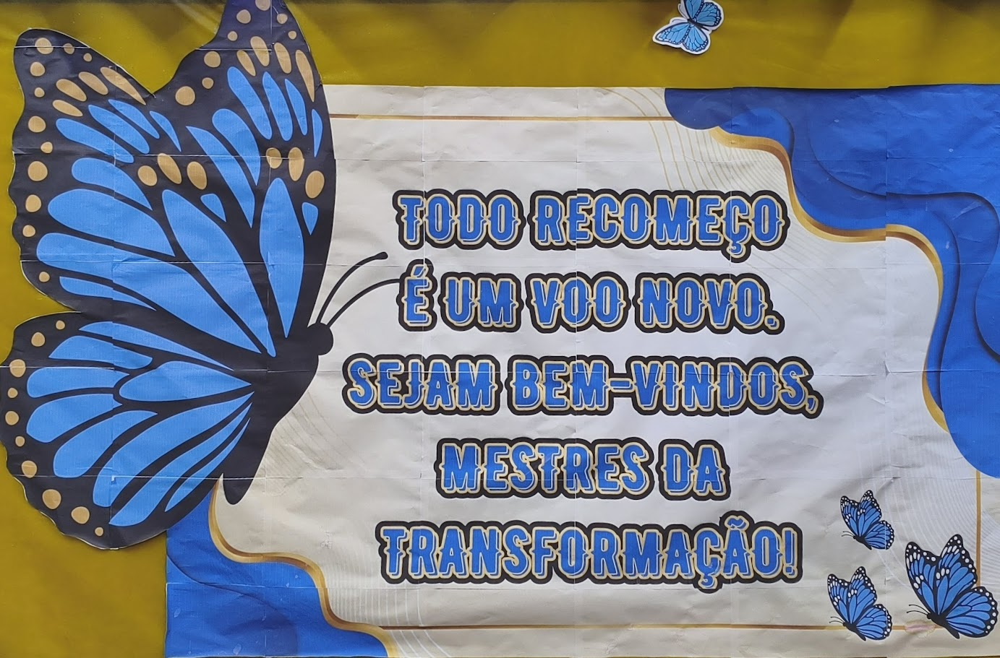

Anotação do colégio
O retorno às aulas é sempre um momento especial, marcado por reencontros, novas expectativas e a oportunidade de recomeçar. O colégio, ao preparar um ambiente acolhedor e cheio de significado, demonstra seu carinho e compromisso em receber todos os alunos de braços abertos.
A mensagem de boas-vindas presente na imagem reforça esse sentimento de acolhimento, valorizando cada estudante que faz parte da comunidade escolar. Elementos visuais fortes e inspiradores transmitem ideias de união, força e determinação, incentivando os alunos a enfrentarem os desafios do novo ano com coragem e confiança.
Mais do que um simples retorno, esse momento simboliza um novo ciclo de aprendizados, amizades e conquistas. O colégio celebra a volta às aulas como uma oportunidade de crescimento, destacando a importância do respeito, da dedicação e do trabalho em equipe.
Assim, todos são convidados a fazer parte dessa jornada, construindo juntos um ambiente positivo, acolhedor e cheio de possibilidades. Seja bem-vindo a mais um ano de aprendizados e realizações!
O retorno às aulas é sempre um momento especial, marcado por reencontros, novas expectativas e a oportunidade de recomeçar. O colégio, ao preparar um ambiente acolhedor e cheio de significado, demonstra seu carinho e compromisso em receber todos os alunos de braços abertos.
A mensagem de boas-vindas presente na imagem reforça esse sentimento de acolhimento, valorizando cada estudante que faz parte da comunidade escolar. Elementos visuais fortes e inspiradores transmitem ideias de união, força e determinação, incentivando os alunos a enfrentarem os desafios do novo ano com coragem e confiança.
Mais do que um simples retorno, esse momento simboliza um novo ciclo de aprendizados, amizades e conquistas. O colégio celebra a volta às aulas como uma oportunidade de crescimento, destacando a importância do respeito, da dedicação e do trabalho em equipe.
Assim, todos são convidados a fazer parte dessa jornada, construindo juntos um ambiente positivo, acolhedor e cheio de possibilidades. Seja bem-vindo a mais um ano de aprendizados e realizações!